Paisagem Instável
Carlos Carvalho Arte Contemporânea, Lisboa, 25.11.2017–13.01.2018
Esculturas da série Paisagem Instável e duas séries de desenho que acompanham o projeto: Apontamentos, aguarela, guache e tinta acrílica sobre papel, 76x111 cm, e Monocultura, aguarela, guache, tinta acrílica e corte sobre papel, 66x570 cm.
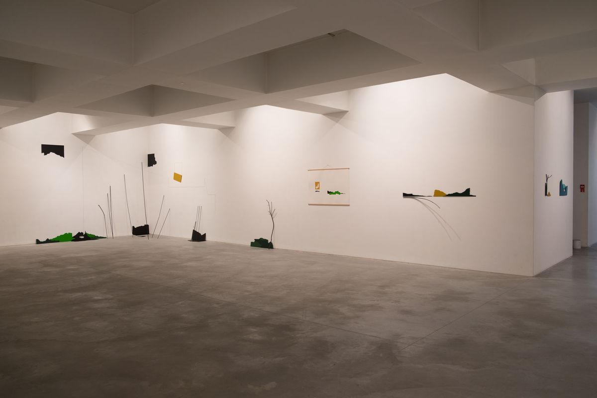
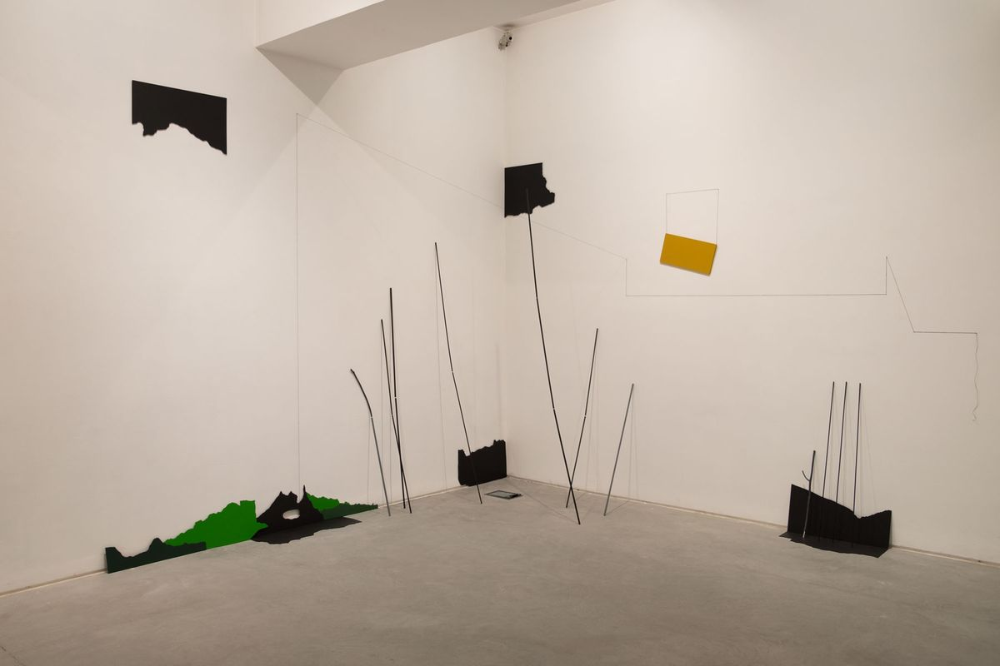
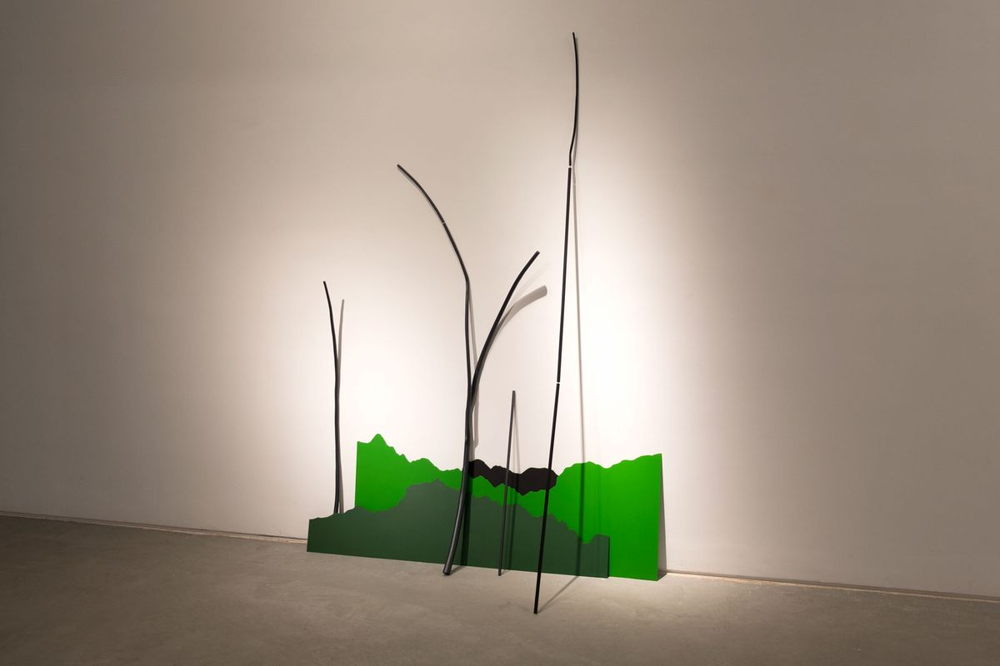
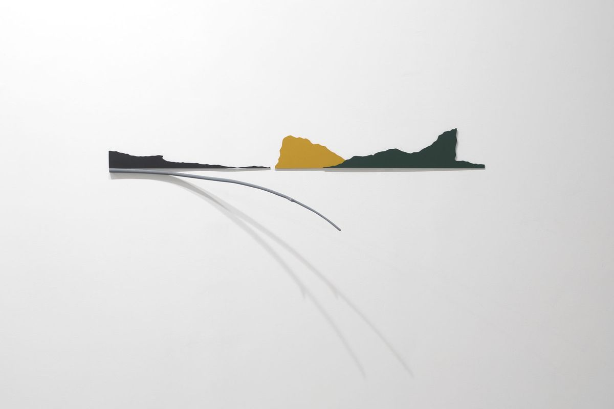
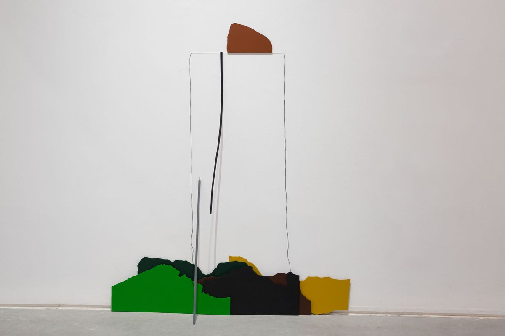
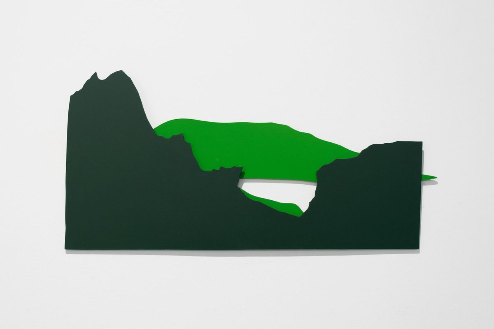
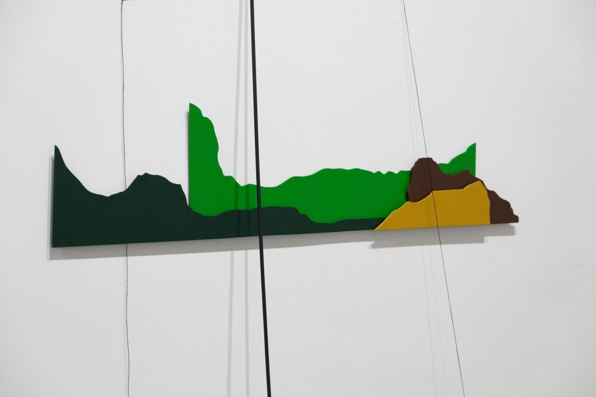
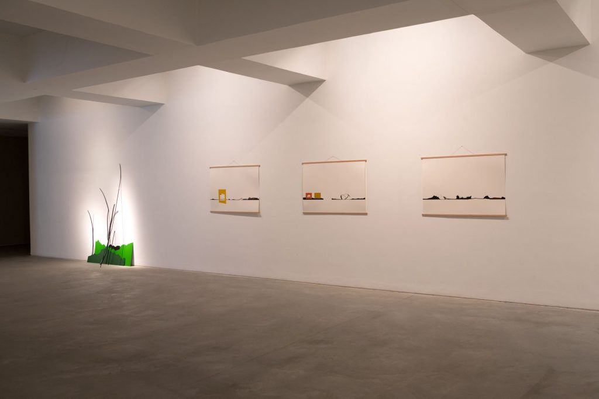
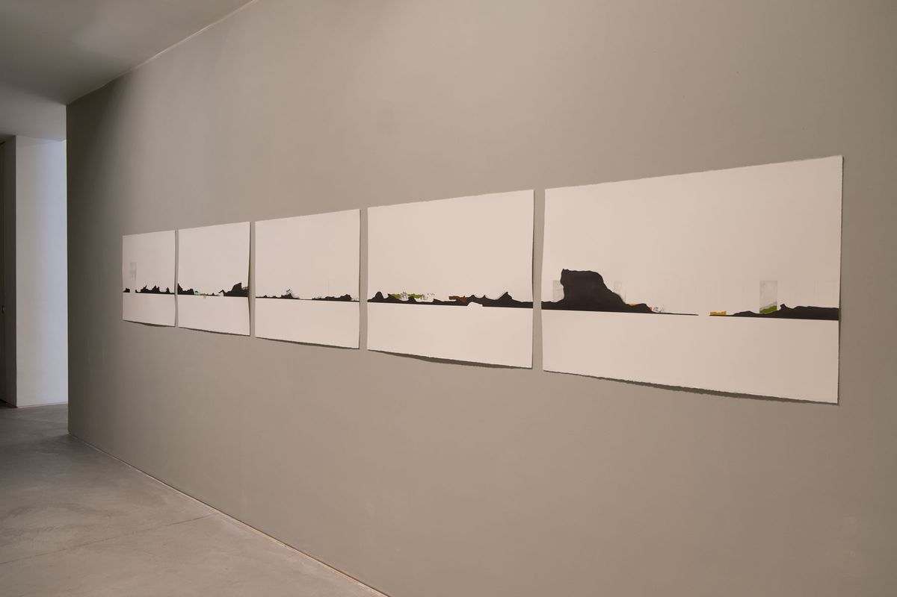
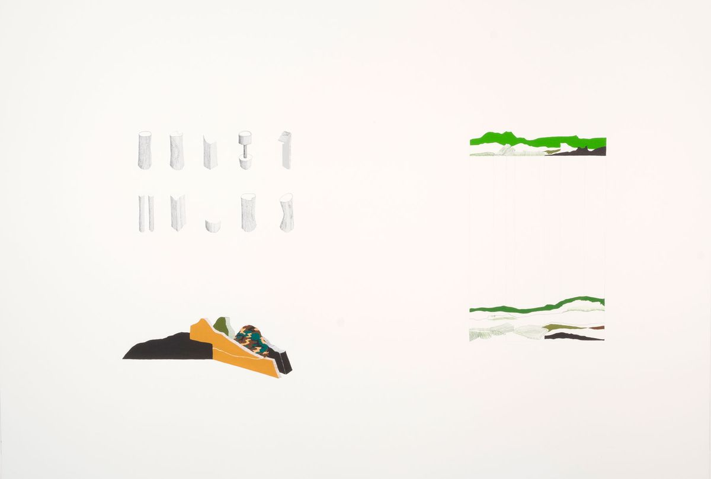
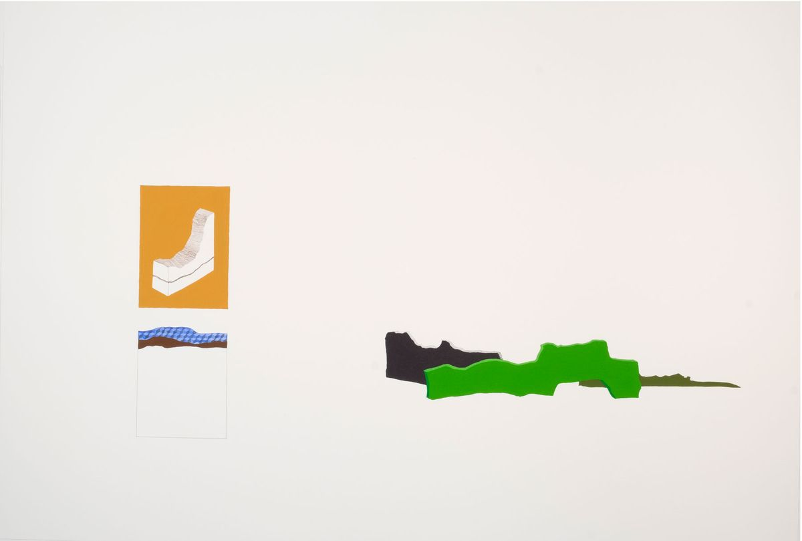
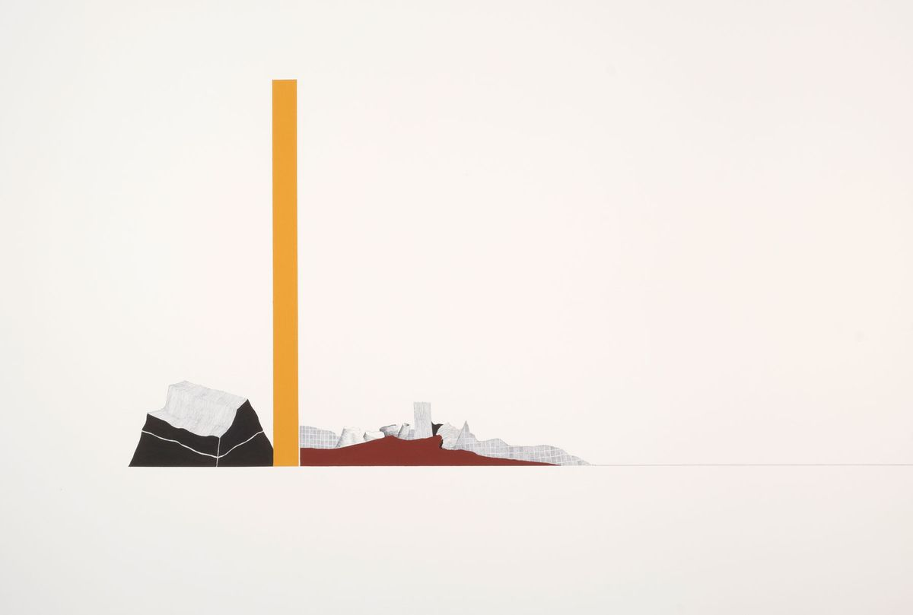
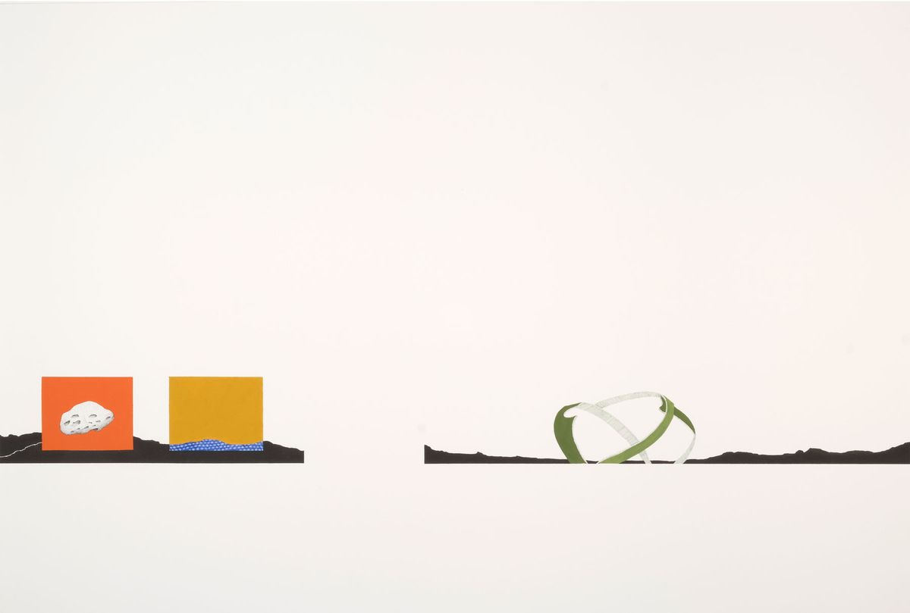
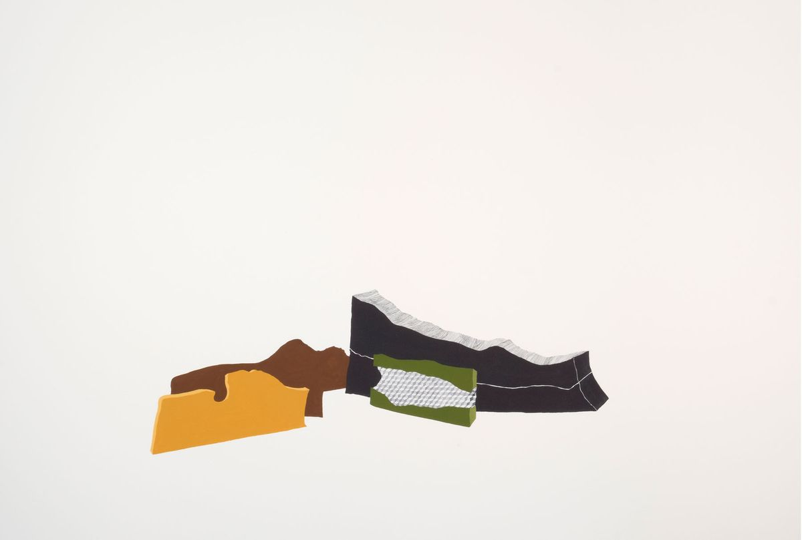
Textos
- Paisagem InstávelJosé Roseira · Carlos Carvalho Arte Contemporânea, Lisboa · 11.2017 · PT
Imprensa
- Artificando ou artificializando a Natureza? Viagens e ilusões nas povoações criadas por Catarina Leitão ↗Inês Ferreira-Norman · Artecapital · 29.12.2023 · PT